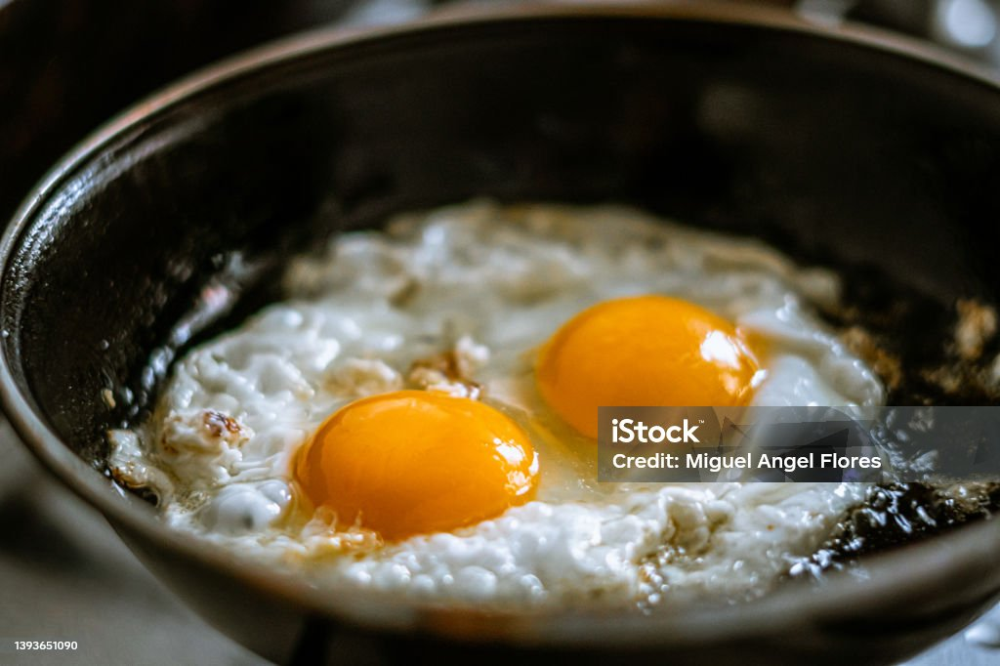

Huevos fritos con patatas
Home

Description
Huevos fritos con patatas is a very simple recipe by it is one of my favourites and one of the classics master dishes in spanish cuisine
Ingredients
- Eggs
- Potatos
- Salt
- Olive Oil
Steps
- Put abundant olive oil in pan
- When heated, but not too much, put the potatos that you would have previously cleaned and cut in fries format
- Fry the potatos until they start to get brown in the edges, and then retire them to a plate and put some salt
- Now fry the eggs (one or two per person) also puting some salt
- Serve hot